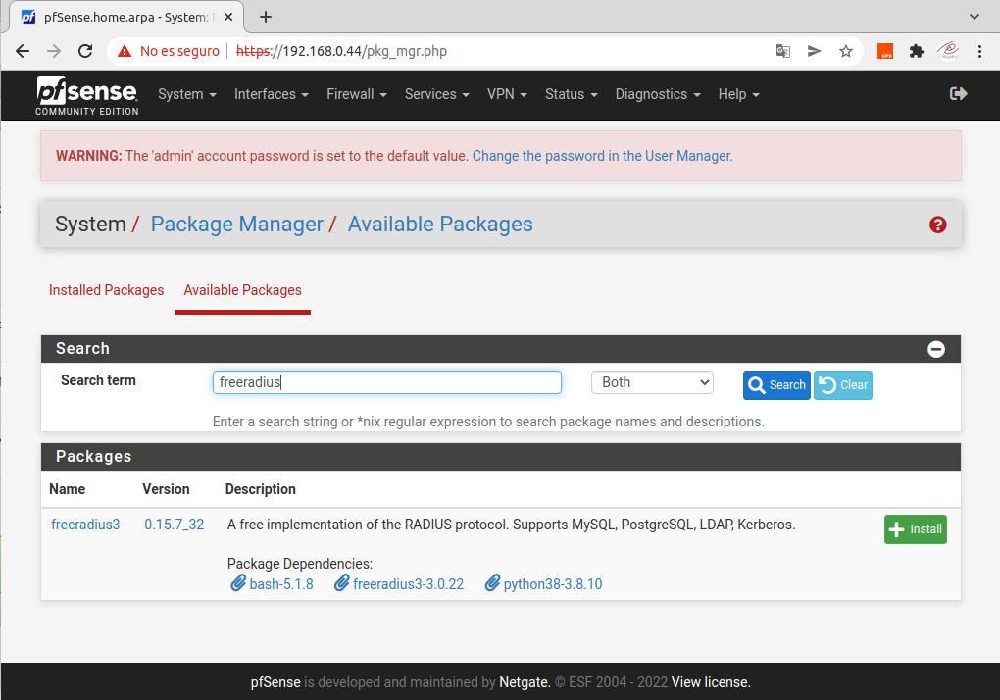
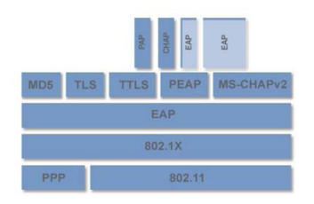
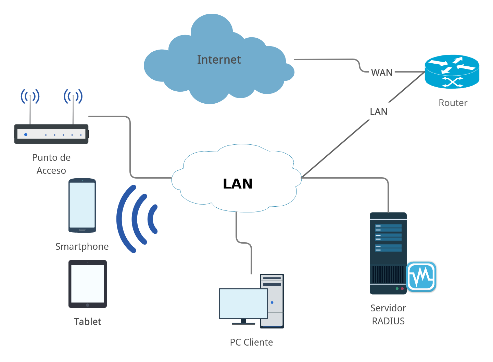
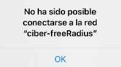
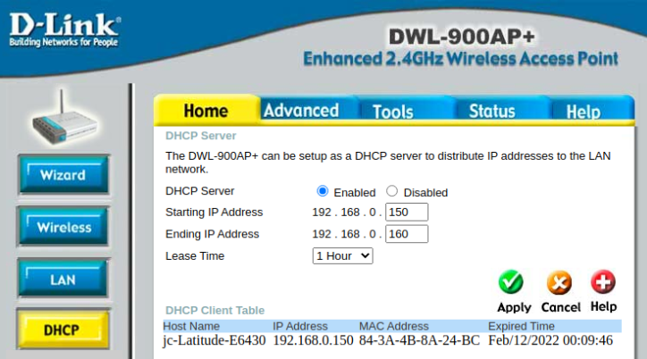
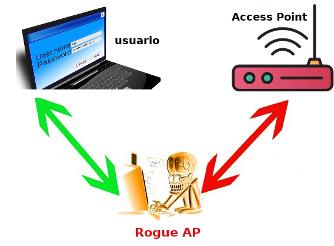
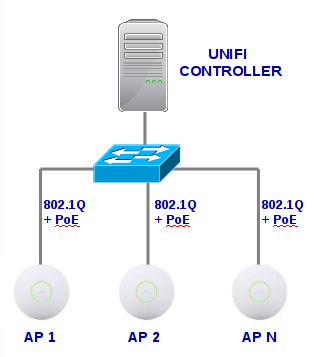

3.1 FreeRadius
1. Introducción
Generalmente las redes WiFi utilizan un tipo de cifrado WPA2 o WPA3 Personal, o también conocido como PSK (Pre-Shared Key), donde se tiene una contraseña para acceder a la red inalámbrica, y todos los clientes WiFi deberán usar esta clave para acceder y para cifrar/descifrar la información que viaja a través del aire.
FreeRADIUS es un servidor RADIUS de código abierto utilizado por muchas organizaciones.
Con FreeRADIUS se puede montar un servidor RADIUS y autenticar a los clientes con nombre de usuario, contraseña y un certificado digital, con el objetivo de configurar redes WiFi con WPA2 o WPA3-Enterprise, haciendo uso de diferentes protocolos como PEAP, TLS, TTLS y MSCHAPv2 entre otros.
En este capítulo, se describe cómo configurar un servidor RADIUS con FreeRADIUS en Ubuntu Server 20.04.3 para autenticar a los clientes inalámbricos.
2. ¿Qué es RADIUS?
RADIUS (Remote Authentication Dial-In User Service), es un protocolo de autenticación y autorización para el acceso a la red, por defecto, hace uso del puerto 1812 UDP para establecer las conexiones entre los equipos para autenticarse.
Los servidores RADIUS permiten tanto autenticar a usuarios de conexiones a Internet, haciendo uso del PPPoE, pero también permite autenticar a usuarios cableados, a usuarios que se quieren autenticar contra un servidor NAS o un servicio, e incluso permite autenticar a los clientes inalámbricos WiFi, haciendo uso de WPA2/WPA3 Enterprise.
Los servidores RADIUS generalmente hacen uso de diferentes protocolos de autenticación, a saber: PAP, CHAP y EAP, entre otros. Una de las características más interesantes, es que permite controlar las sesiones, cuándo comienza la autenticación, cuando acaba la conexión y muchos otros parámetros.
3. ¿Qué es FreeRADIUS?
FreeRADIUS es un software para montar un servidor RADIUS, es modular, gratuito y proporciona un alto rendimiento y una gran seguridad. FreeRADIUS es compatible con todos los protocolos de autenticación habituales, de hecho, es la base de muchos productos y servicios comerciales de RADIUS, además, se tienen una gran cantidad de módulos incluidos y otros que se pueden incorporar. Por ejemplo, los módulos incluidos permiten LDAP, MySQL, PostgreSQL e incluso Oracle y otras bases de datos, respecto a los tipos de autenticación, soporta EAP, incluyendo PEAP, EAP-TTLS y también EAP-TLS.
FreeRADIUS permite ser administrado a través de herramientas adicionales, para no tener que configurarlo de manera manual a través de editar complejos archivos de texto y posteriormente cargar la configuración. Como ejemplo, el sistema pfSense dispone de una completa interfaz gráfica de usuario que permite configurar todos los parámetros en detalle, además, tiene la posibilidad de ver los archivos de texto de configuración en bruto, por si se quiere realizar alguna modificación.

Figura 1. Acceso a la instalación de freeradius en pfsense.
Referencia: Instalación de FreeRadius en PfSense.
4. Métodos de autenticación
Existen diferentes tipos de autenticación en un servidor Radius, algunos son utilizados con mayor frecuencia principalmente por su suporte en plataformas Windows. En concreto los mecanismos de autenticación más conocidos y con los que normalmente se suele trabajar cuando se configura un servidor Radius son:
- EAP-TTLS. Es un mecanismo que mantiene un compromiso entre seguridad y coste de implementación. Permite que las comunicaciones se realicen en un túnel cifrado de comunicaciones y obliga a que el servidor se autentique con un certificado y opcionalmente permite el uso de certificados en el lado del cliente. Se trata de una solución que no se encuentra tan extendida como PEAP con EAP-MSCHAP-V2 debido a que no cuenta con soporte nativo para plataformas Windows.
- EAP-TTLS/PAP. Es un protocolo basado en credenciales que se creó para una configuración más sencilla porque solo requiere que el servidor esté autenticado, mientras que la autenticación del usuario es opcional. TTLS crea un "túnel" entre el cliente y el servidor y le brinda múltiples opciones de autenticación, pero TTLS incluye muchas vulnerabilidades. El protocolo permite que las credenciales se envíen por aire en texto claro (Cleartext), que puede ser vulnerable a ataques cibernéticos como Man-In-The-Middle y se puede reutilizar fácilmente para lograr los objetivos del ciberdelincuente. Si desea obtener más información sobre las vulnerabilidades de TTLS-PAP, puedes leer este artículo.
- EAP-TLS. Es un mecanismo de autenticación muy similar al EAP-TTLS. Tiene una diferencia que le hace ser, probablemente el mecanismos de seguridad más fuerte de todos los EAP que se encuentran disponibles. Esta diferencia es que EAP-TLS tiene como requerimiento OBLIGATORIO que tanto el cliente como el servidor utilicen certificados para realizar el proceso de establecimiento del túnel cifrado y posterior autenticación, por lo que requiere la necesidad de implementar una infraestructura de clave pública PKI (Public Key Infrastructure) para la gestión de certificados. Se trata del mecanismo más robusto que actualmente puede establecerse sobre un servidor Radius. Como dificultad decir que en entornos con un número de clientes medio, la distribución de los certificados personales puede ser un proceso bastante delicado.
- PEAP (Protected EAP). Es uno de los más extendidos, probablemente a causa de que se encuentra soportado de forma nativa en plataformas Windows, especialmente la versión PEAP 0 la cual funciona con EAP-MSCHAP-V2, la versión 1 no se encuentra soportada de forma nativa en máquinas Windows por lo que no se ha vuelto tan popular. Para que este mecanismo sea “seguro” es necesario que el servidor tenga instalados certificados que puedan ser validados por el cliente. Utiliza TLS para crear un canal cifrado entre un cliente y un servidor de autenticación (RADIUS o IAS). No especifica un método de autenticación, sino que proporciona seguridad adicional para otros protocolos de autenticación de EAP que pueden operar a través del canal cifrado de TLS que proporciona PEAP. Se utiliza como método de autenticación para los equipos cliente inalámbricos 802.11, pero no se admite en clientes de red privada virtual (VPN) u otros clientes de acceso remoto. Para redes WLAN, puede elegir entre dos tipos de EAP para usar con PEAP:
- EAP-MS-CHAPV2: usa credenciales (nombre de usuario y contraseña) para la autenticación de usuarios, y un certificado del almacén de certificados del equipo servidor para la autenticación del servidor.
- EAP-TLS: Se ha visto anteriormente.
- LEAP. Es un método de autenticación WLAN propietario de Cisco Systems. Se utilizan también las contraseñas como método de autenticación en el servidor. Cuando se emplea LEAP las credenciales de usuario (nombre de usuario y contraseña) se envían sin cifrar, además requiere de una infraestructura Cisco para poder ser utilizado. Esta autenticación aunque ligera, previene de ataques Man In The Middle y de secuestro de sesión, pero sigue manteniendo riesgos de exposición de la identidad y de ataque de diccionarios. Sólo soporta conexiones con LDAP si sus clientes se autentican usando el protocolo MS-CHAP y las contraseñas deberán ser almacenadas en LDAP en texto plano debido a que las credenciales de usuario se envían sin cifrar.
- EAP-FAST. Es una propuesta de protocolo de Cisco System como reemplazo de LEAP. Fue diseñado para hacer frente a las debilidades de LEAP preservando al mismo tiempo la aplicación “ligera”. El uso de certificados es opcional en la parte del servidor y no soportado en el cliente. EAP-FAST utiliza unas credenciales de acceso protegidas (PAC) para establecer un túnel autenticado entre cliente-servidor.
| Certificados en Servidor | Certificados en Clientes | Soporta LDAP | Compatibilidad Windows | |
| PEAP | Obligatorio | Opcional | SI | SI |
| EAP-TTLS | Obligatorio | Opcional | SI | - |
| EAP-TLS | Obligatorio | Obligatorio | SI | - |
| LEAP | - | Sólo con MS-CHAP * | - | |
| EAP-FAST | Opcional | SI | Sólo en arquitecturas Intel |
Tabla 1. Comparativa de los mecanismos de autenticación.
De los citados anteriormente quizás el más utilizado es PEAP, probablemente porque se encuentra soportado de forma nativa en sistemas Windows, aunque no es el más seguro.

El protocolo 802.1X precisa del protocolo EAP, ya que éste es un protocolo de transporte, no de autenticación, tal y como se puede ver en la figura superior En ella se muestran los diferentes tipos de protocolos de autenticación a un nivel superior y por debajo (nivel 2 del modelo OSI) utiliza el protocolo 802.1X. Con esto se puede llegar a conseguir que no asigne dirección IP a un equipo solicitante hasta que éste realmente no se autentique.
Otro tipo de autenticación del protocolo de autenticación ampliable (EAP) no aconsejable es:
- EAP-MD-5. Es un tipo de autenticación EAP que proporciona compatibilidad EAP de nivel básico. Normalmente, EAP-MD-5 no se recomienda para implementaciones de LAN Wi-Fi, ya que puede permitir la derivación de la contraseña del usuario. Solo realiza una autenticación unidireccional y no admite la distribución y rotación automáticas de claves WEP,
Después de un análisis de lo comentado anteriormente, suele dar lugar a las siguientes conclusiones:
- No se suele utilizar MD5, ya que solo realiza una autenticación unidireccional y no admite la distribución y rotación automáticas de claves WEP, por lo que no alivia la carga administrativa del mantenimiento manual de claves WEP.
- Aunque TLS es muy seguro, requiere la instalación de certificados de cliente en cada estación de trabajo Wi-Fi. El mantenimiento de una infraestructura PKI requiere tiempo y experiencia administrativa.
- TTLS resuelve el problema de los certificados mediante la tunelización de TLS y, por tanto, elimina la necesidad de contar con un certificado de cliente. Esta suele ser la opción preferida.
- LEAP aunque anteriormente era un código patentado de Cisco (funciona solo con adaptadores Wi-Fi de Cisco), Cisco ha licenciado LEAP a muchos otros fabricantes a través del programa Cisco Compatible Extensions. Se debe aplicar una política de contraseñas seguras cuando se utiliza LEAP para la autenticación.
- EAP-FAST ya está disponible para las empresas que no pueden aplicar una política de contraseñas seguras y no desean implementar certificados para la autenticación.
- El PEAP más reciente funciona de forma similar a EAP-TTLS, ya que no requiere un certificado del cliente. PEAP cuenta con el respaldo de Cisco y Microsoft, y está disponible desde Microsoft sin costo adicional. Si desea realizar una transición de LEAP a PEAP, el servidor de autenticación ACS de Cisco ejecutará ambas.
Teniendo en cuenta los métodos de autenticación con los que trabaja FreeRadius, el método que se debería elegir es EAP-TTLS por los siguientes motivos:
- EAP-TTLS es un método de autenticación tunelado que implementa un sistema de dos túneles de seguridad: Uno se crea para el intercambio de credenciales y otro para el traspaso de la clave de cifrado de sesión con la que los puntos de acceso cifran el tráfico con el cliente que se conecta.
- Todo el tráfico circula totalmente cifrado, de manera que proporciona un sistema seguro de acceso a la red.
- La autenticación se realiza solo con certificados de servidor y no es necesario generar certificados para cada cliente nuevo que desee conectarse a la red. Esto facilita el acceso de nuevas máquinas a la red. Este método está preparado para futuras necesidades, si se decide la implantación de certificados en el lado del cliente.
- A diferencia de otros tipos de EAP, tiene la capacidad de soportar una amplia variedad de métodos de autenticación interna. PEAP sólo puede autenticar a los clientes que utilizan el protocolo de autenticación por desafío mutuo de Microsoft conocida como MS-CHAPv2.
- No es vulnerable actualmente a ataques MITM ni de diccionarios.
5. Protocolos de autenticación
Independientemente de los métodos de autenticación que se han visto en el apartado anterior, para la comunicación interna de los servicios se puede utilizar diferentes protocolos de autenticación. A continuación se describen los protocolos soportados por EAP-TTLS:
- PAP. Protocolo simple de autenticación para autenticar un usuario contra un servidor de acceso remoto o contra un proveedor de servicios de internet. PAP es un subprotocolo usado por la autenticación del protocolo PPP (Point to Point Protocol), validando a un usuario que accede a ciertos recursos. PAP transmite contraseñas o passwords en texto plano.
- CHAP. Utiliza un algoritmo (MD5) para calcular un valor que sólo conocen el sistema de autenticación y el dispositivo remoto, conocido como secreto compartido. Con CHAP, el nombre de usuario y la contraseña siempre se envían cifrados. Aunque la comunicación esté cifrada, actualmente el algoritmo MD5 es vulnerable.
- MSCHAP/MSCHAPv2 ((Microsoft Challenge Handshake Authentication Protocol.). Es un protocolo de autenticación de contraseñas de cifrado por desafío mutuo, de Microsoft, el cual es irreversible. Básicamente la diferencia entre ambos protocolos es que la versión 2 de MSCHAP, Microsoft realizó mejoras importantes de seguridad. Proporciona autenticación mutua, claves de cifrado de datos iniciales más fuertes. Actualmente, ambos protocolos son vulnerables.
- PEAP-MSCHAPv2. Es un protocolo basado en credenciales diseñado por Microsoft para entornos de Active Directory. Aunque es uno de los métodos más populares para la autenticación WPA2-Enterprise, PEAP-MSCHAPv2 no requiere la configuración de la validación del certificado del servidor, lo que deja a los dispositivos vulnerables al robo de credenciales por el aire. Aquí puedes leer cómo esta importante universidad pasó de la autenticación PEAP-MSCHAPv2 a la autenticación EAP-TLS para proporcionar una autenticación más estable a los usuarios de la red. Para obtener más información sobre PEAP MSCHAPv2, puedes leer este artículo.
Dependiendo la infraestructura, se puede decantar por un protocolo u otro.
Ejemplo: Si se tiene una infraestructura LDAP, no queda más remedio que usar PAP debido a la compatibilidad con los algoritmos de cifrado de las contraseñas de LDAP. PAP no es recomendable usarlo independiente, pero no hay ningún problema al usarlo junto a EAP-TTLS ya que éste cifra toda la comunicación cliente-servidor haciendo uso de túneles. Por lo que mediante el uso de certificados digitales EAP-TTLS es capaz de autenticar a los usuarios a través del protocolo PAP de una manera segura.
6. ¿Para qué me sirve montar un servidor RADIUS para una red WiFi?
Cuando se habla de redes WiFi, de manera habitual se hace uso de WPA2 o WPA3-Personal, donde se utiliza una misma contraseña para todos y cada uno de los dispositivos. Esta clave es precompartida, es decir, todos los clientes WiFi que se quieran conectar, deben conocerla.
Este tipo de redes se suelen atacar por fuerza bruta o por diccionario, aunque lógicamente las redes WPA3 son más seguras y resisten mejor los diferentes ataques.
Si se monta un servidor RADIUS, se puede configurar el router WiFi o punto de acceso WiFi para usar autenticación WPA2/WPA3-Enterprise, donde no se tendrá una clave precompartida para todos los usuarios, sino que cada usuario tendrá su propio nombre de usuario y contraseña para acceder a la red WiFi.
Un servidor RADIUS hace uso de una autoridad de certificación (CA), porque hay algunos protocolos de autenticación que hacen uso de una infraestructura de clave pública para la autenticación de los clientes, además, esto es muy importante porque todos los clientes deberían tener siempre el certificado de la CA para comprobar que efectivamente se están conectando a la red WiFi legítima. Algunos ataques a las redes WiFi consisten en hacerse pasar por el punto de acceso legítimo (Man in the Middle), de esta forma, la víctima podría estar enviando sus credenciales a un ciberdelincuente. Por este motivo, es muy recomendable que no solo se tenga el usuario y clave de la red WiFi, sino que se debería usar este certificado de la CA para comprobar que la red WiFi a la que el usuario se conectado es legítima.
El esquema de funcionamiento de un servidor RADIUS en un servidor Ubuntu Server 20.04.3 con un Punto de Acceso como cliente Radius:

Figura 2. Esquema de red.
En este caso, se tiene instalado FreeRADIUS en un Ubuntu Server 20.04.3 LTS , y se autenticarán a los clientes inalámbricos que se conecten al Punto de Acceso directamente desde aquí. La configuración de los puntos de acceso es diferente con cada fabricante, pero lo único que hay que tener en cuenta son tres parámetros:
- IP del servidor RADIUS, en este caso, el equipo ubuntu server 20.04.3 LTS.
- Puerto de escucha del servidor RADIUS, configurable, pero por defecto es el 1812.
- Clave de autenticación del punto de acceso con el servidor RADIUS (secreto compartido).
El proceso de autenticación de un cliente WiFi con WPA2 o WPA3-Enterprise es el siguiente:
- Un cliente WiFi se conecta a la red WiFi a través de un punto de acceso. Se le pedirá que introduzca unas credenciales de usuario (usuario y clave), y también que cargue el certificado de la CA, para proteger frente a posibles ataques MitM. Si no se tiene el certificado, se puede desactivar la opción.
- El punto de acceso WiFi enviará las credenciales al servidor RADIUS en ubuntu server, el cual se ha configurado previamente. Si las credenciales son válidas, se le permite el acceso y si las credenciales no son válidas, la autenticación fallará y se mostrará un error en el cliente WiFi, ejemplo:

En cuanto se le permita entrar a la red porque las credenciales son válidas, se le proporcionará una dirección IP, gateway y DNS por DHCP y accederá a todos los recursos de la red WiFi. Esto se podrá configurar en el Punto de Aceso, es decir, el rango de direcciones IP, etcétera. Ejemplo:

Figura 3. Configuración del servidor dhcp en el AP.
7. Rogue AP
Una de las formas de robo de información en redes WiFi es la técnica conocida como Rogue AP o suplantación del punto de acceso. La idea de esta técnica de ataque es conseguir que la víctima se conecte al equipo del atacante (hace la función de un punto de acceso legítimo), para que sea éste el que redirija el tráfico.
Es una forma sencilla de realizar un ataque de Man In The Middle ya que al estar el atacante realizando funciones de Punto de Acceso va a poder interceptar absolutamente todas las comunicaciones.
Para que el ataque tenga éxito, es necesario que la suplantación de un Punto de Acceso legítimo sea lo más real posible, por lo que se debe recrear un entorno de red con las mismas características en el Rogue AP a las del Punto de acceso legítimo, copiando para ello el BSSID, ESSID y las configuraciones de seguridad de la red.

Figura 4. Esquema Rogue AP.
9. Referencias:
- https://freeradius.org/
- [Autenticación radius usando freeradius]
- https://www.incibe-cert.es/blog/protocolos-aaa-radius
- https://docs.microsoft.com/es-es/windows-server/networking/technologies/extensible-authentication-protocol/network-access
- https://www.intel.es/content/www/es/es/support/articles/000006999/wireless/legacy-intel-wireless-products.html
- https://wiki.freeradius.org/guide/WPA-HOWTO
- CERES - Certificado de servidor Radius
Red Wi-Fi en un Centro Educativo
En un Centro Educativo se suele usar una red wifi con WPA/WPA2 Enterprise con un servidor freeradius y una base de datos de usuarios en Samba 4, compatible con Active Directory con Windows Server. De esta forma, se usa un sistema compatible con Microsoft sin pagar licencias al ser software libre.
Los usuarios (profesorado, alumnado y PAS) acceden a la red wifi con su usuario y contraseña de Active Directory (Samba 4), que es el mismo con el que acceden a Aules. De esta forma, con las mismas credenciales acceden a todos los servicios a los que les autoriza el RADIUS a través de Samba 4.
Hay dos wifis separadas, una para profesorado y otra para alumnado, por razones obvias de seguridad. Ambas redes están conectadas a la red cableada del centro a través de un cortafuegos, que además aplica reglas de seguridad para todas las subredes del centro, como aulas, departamentos, biblioteca, salón de actos, etcétera.
Esta combinación de RADIUS + Samba 4 garantiza el funcionamiento para todas las plataformas (GNU/Linux, Windows, Android, Mac, iPhone, Windows Phone, etcétera) al usar el protocolo de autenticación EAP-PEAP, ampliamente soportado por todos los fabricantes de dispositivos. No se recomienda usar otros sistemas como EAP-TTLS con servidor LDAP, debido al mal soporte que dan algunas plataformas como Windows Phone o Mac a dicho protocolo.
Además, se utiliza una wifi unificada con puntos de acceso de la marca Ubiquity, que utiliza un software controlador de los puntos de acceso que se puede instalar en Windows o en GNU/Linux. Este software centraliza la gestión de los AP y genera estadísticas de uso, rendimiento y cobertura e incluso detección de puntos de acceso falsos. Los puntos de acceso se alimentan a través del cable de datos mediante Power Over Ethernet (PoE):

Figura 1. Esquema del controlador wifi con los AP ligeros.
Obra publicada con Licencia Creative Commons Reconocimiento No comercial Compartir igual 4.0